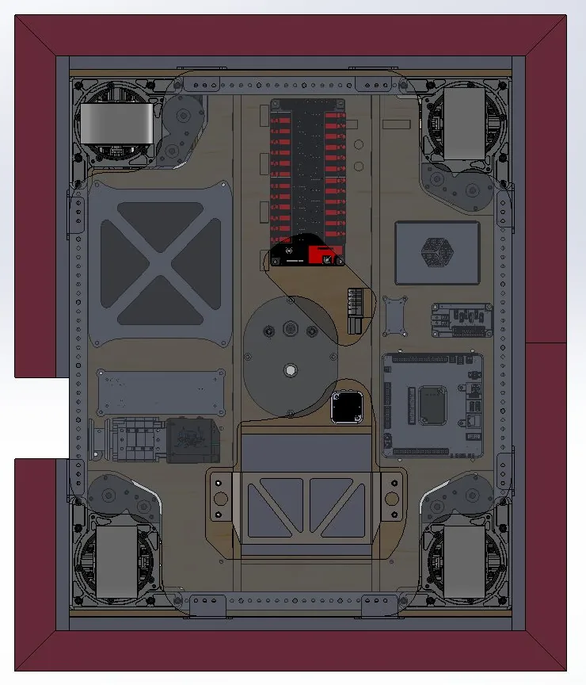
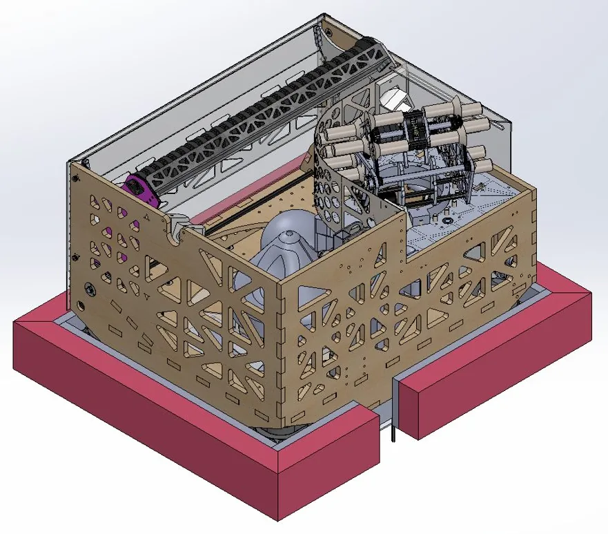
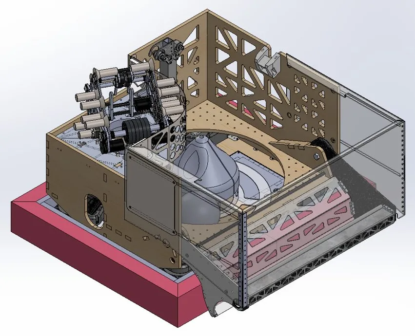
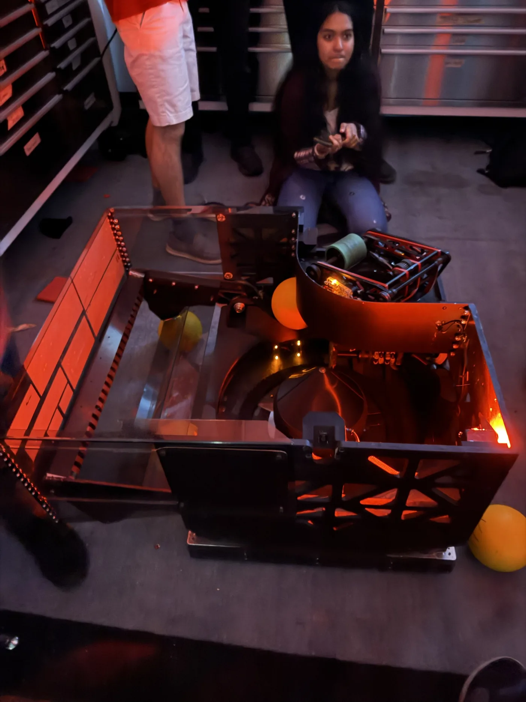
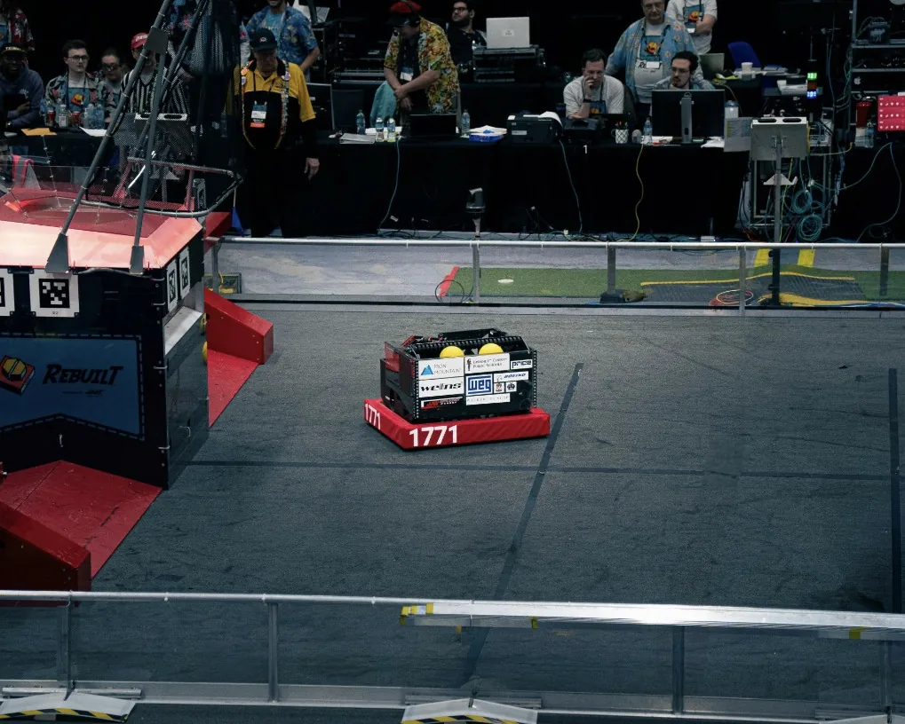
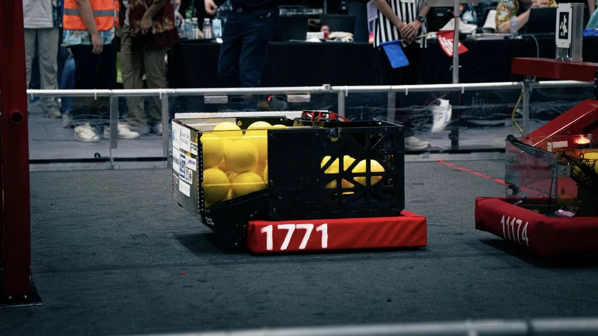
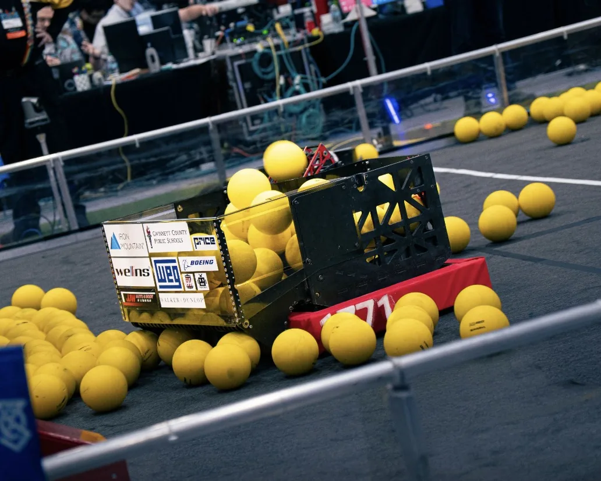

Blitz — 2026 competition robot
| Team | FIRST Robotics Competition, Team 1771 |
|---|---|
| Role | Lead designer and lead engineer |
| Dates | January – May 2026 |
| Result | Milstein Division semifinalists, 2026 World Championship; alliance captain |
Blitz is the first robot whose architecture I owned end to end. I drew every mechanical subsystem and the complete electrical system in CAD, routed the CAN network, then wired the robot and manufactured most of its parts in-house. We reached the Milstein Division semifinals at the 2026 World Championship as alliance captain.
Electrical architecture
I laid out the complete electrical system in CAD before anything was wired, which is the part of this project I would most want to be asked about. Treating the board as a drawing rather than something improvised during build season meant component placement, CAN routing and service access were decided while they were still cheap to change.

Two decisions drove the layout. First, every device on the CAN network had to sit on a route that did not cross a mechanism or a service point, so the chain follows the chassis perimeter rather than cutting across the middle of the robot. Second, the board lives on the floor of the chassis under a metal cover that sits behind the bumper line, so the controllers and wiring are shielded from exactly the contact that this year's game produced in volume.
Motor controllers are distributed to their mechanisms rather than centralised. The turret carries three motors and their controllers directly on the rotating assembly; both intake motors sit inside the main chassis instead of on the intake arm. That second choice is what makes the intake a two-bolt removal — the electrical interface stays with the robot when the mechanism comes off.
Mechanical subsystems

Chassis
The chassis is 12 mm Baltic birch cut on our CNC router. Wood gave us fast iteration and let us place mounting holes anywhere we needed on the fly, and we lightening-holed the whole structure to cut weight without losing rigidity.
Intake and hopper
The intake pivots on two motors: one drives the up-and-down motion, the other spins a row of 60-durometer composite wheels inward to pull balls in. That same pivoting motion doubles as the drive for the hopper, sliding it in and out passively as the intake moves — a fully mechanical link with no extra motor.
The hopper is polycarbonate, cut and bent in-house, shaped to expand effective ball storage. The intake is PID-tuned so a full load of balls cannot push it back up on its own, which is what keeps that passive hopper motion reliable under game load.
Indexing — the spindexer
Balls are indexed by what we called the spindexer: a 3D-printed cone with holes and divots that stirs the balls to prevent jams, paired with a moving polycarbonate floor that carries balls forward without ever compressing them. Both are wrapped in grip tape for consistent traction. Around the moving floor sits a 3D-printed ring we nicknamed the Singularity — a sloped surface we iterated on dozens of times to stop jams and let gravity feed balls in faster. The whole system runs off a custom two-motor 3D-printed gearbox at the bottom of the robot.
Feeder
A single-motor feeder carries balls from the indexer up into the turret. Pulleys and gears set different ratios on the front and back rollers so both run correctly off that one motor. The front row uses two omni wheels to pull balls in with minimal friction, then a small 3D-printed ramp, then polycord the rest of the way up.

Turret and shooter
The turret rotates 420 degrees, driven by two constant-force springs pulling a tether around a 3D-printed ring — a simple mechanism that gave us nearly a rotation and a half of range. The assembly is 12.75 inches in diameter and carries three motors and their controllers on the turret itself: two drive the main shooter wheels and four back-hood wheels, and one drives rotation. We spent a long time testing gear ratios on the back-hood wheels specifically, balancing range, accuracy and power draw.
Manufacturing and assembly
Most of Blitz was made in-house. The chassis and polycarbonate came off our CNC router, and the spindexer cone, the Singularity ring, the feeder ramp and the two-motor gearbox were all custom 3D-printed parts. I assembled the robot's electrical system and physical structure rather than handing the drawings to someone else, which is the only reason the service decisions above held up — you find out quickly whether a connector is reachable when you are the one reaching for it.

Competition
Blitz competed through the 2026 season to the Milstein Division semifinals at the FRC World Championship, where I served as alliance captain and drove the robot.



Team record
Blitz is the most recent robot in four years with Team 1771, where I went from CAD support to leading a robot's design and build. Over that run the team placed 4th in the world at the 2025 FRC World Championship as Curie Division champion, fielded the #1-ranked autonomous robot in the world in 2024, and won three consecutive state championships from 2024 to 2026. I served as team and alliance captain across three of those seasons and drove Blitz in competition.
What I would change
We fully CAD'd a climber for Blitz and decided not to install it. Given our match strategy that season, the point value did not justify the weight, complexity and failure risk — a tradeoff we made deliberately rather than a mechanism that ran out of time. I still think that was right, but we committed to it late, and the weeks spent CADing it were weeks not spent on the indexer, which was our real bottleneck.
The other change is electrical. Routing CAN around the perimeter kept it clear of mechanisms, but it also made the chain longer than it needed to be, and diagnosing a fault meant walking most of the robot. Next time I would plan service access and fault isolation into the topology from the start, not just mechanical clearance.